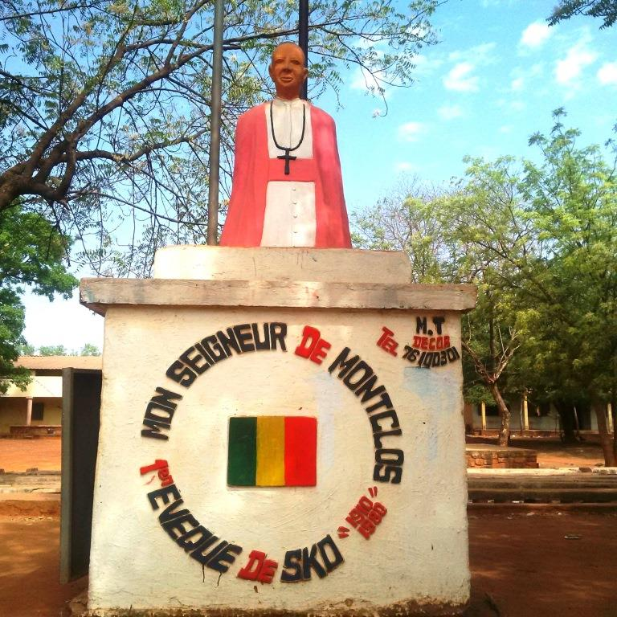

Portail officiel de la promotion 1994-2000. Un espace de mémoire, d'échange et d'action pour cultiver la solidarité entre anciens et accompagner le lycée dans sa mission éducative.

Quatre axes qui guident l'action de l'amicale depuis sa création.
Soutenir les membres à travers la caisse de solidarité et développer l'esprit d'entraide au sein de la promotion.
Accompagner le LMMS dans ses tâches éducatives et pédagogiques, et agir pour l'éducation et l'hygiène.
Renforcer les capacités des membres par des formations, des conférences-débats et des échanges d'expérience.
Élaborer et mettre en œuvre des projets de développement communautaire au service des populations.
Les anciens élèves du Lycée Monseigneur Didier de Montclos de Sikasso, promotion 1994-2000, se sont constitués en association lors de l'Assemblée Générale constitutive tenue à Koutiala le 7 mars 2020, en présence de quarante-sept membres.
L'amicale est régie par la loi n° 04-038 du 5 août 2004 relative aux associations en République du Mali.
En savoir plusNotre emblème : un oiseau en vol, jaune et vert, symbole de croissance et de prospérité.
Réunion de l'association pour l'adoption des nouveaux projets et le bilan d'activité.
Mise en place du fonds d'entraide mutuelle destiné à soutenir les membres dans les événements de vie.
Rejoignez l'annuaire, mettez à jour vos informations ou proposez vos idées pour dynamiser la vie de notre amicale.
Contacter le Bureau